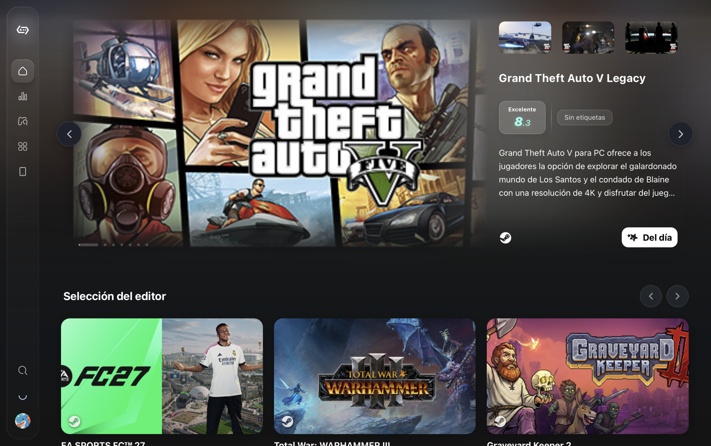
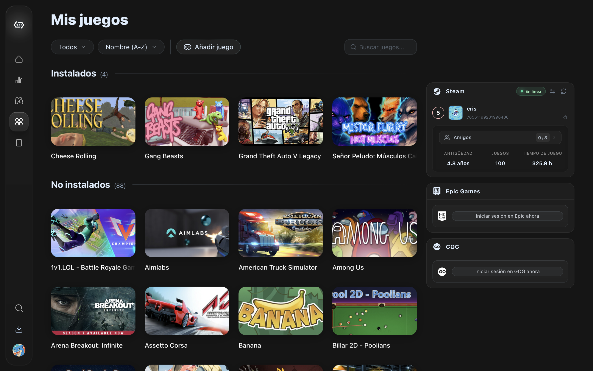
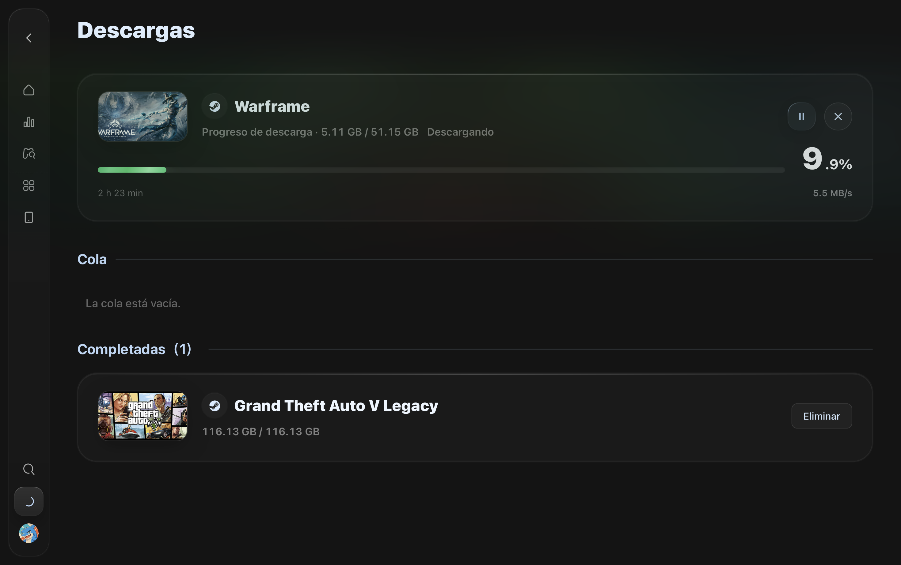

como descargar gta V en macbook?
tienes que descargar Gamehub-test desde safari o tu navegador de preferencia, luego inicias sesion con steam o cualquier launcher de juegos.

luego inicia sesión con steam y le das en biblioteca

luego buscas en la biblioteca gta V y le das en descargar y seleccionas el disco en el cual deseas descargarlo

ahi saldra el tiempo de descarga y los mbps de internet, cuando termina solo le das en abir y incias sesion en rockstar launcher

como descargar GTA V en mac paso a paso
Paso 1: Descargar Gamehub-test desde el navegador de tu preferencia.
Paso 2: Iniciar sesión con Steam o cualquier launcher de juegos.
Paso 3: Ir a la biblioteca y buscar GTA V.
Paso 4: Descargar el juego y seleccionar el disco donde deseas instalarlo.
Paso 5: Esperar a que la descarga termine y luego abrir el juego.
- tener gamehub-test
- iniciar sesion con steam
- buscar gta V en la biblioteca
- descargar el juego
- esperar a que termine la descarga
- iniciar sesion en rockstar launcher
- abrir el juego y disfrutar